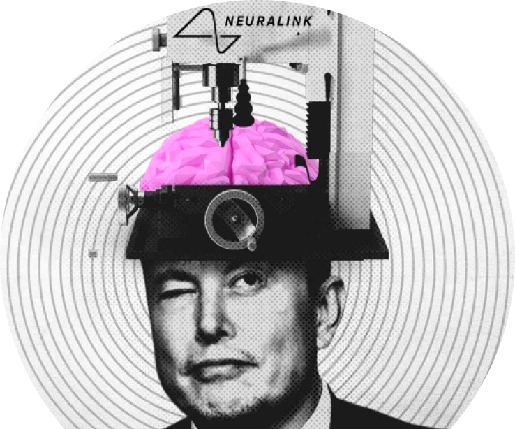
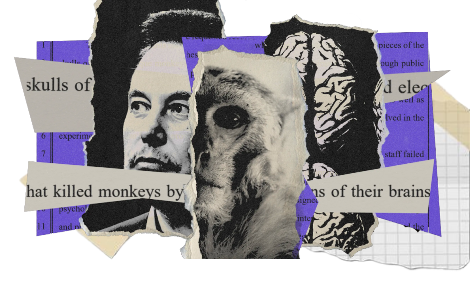

Neuralink's human trials raise serious ethical concerns, including allegations of animal cruelty and a troubling mortality rate linked to the accelerated research pace set by Elon Musk. Former employees describe experiments as error-prone "hack jobs," contributing to the departure of key scientists. The long-term impact of brain-computer interface (BCI) technology remains uncertain, necessitating the establishment of ethical guidelines. Data privacy is also a concern, considering potential direct access to the human brain and Musk's company's objectives extending beyond medical applications. Safeguarding sensitive medical data and ensuring Neuralink prioritizes participant well-being over profit remain paramount in this evolving ethical landscape.